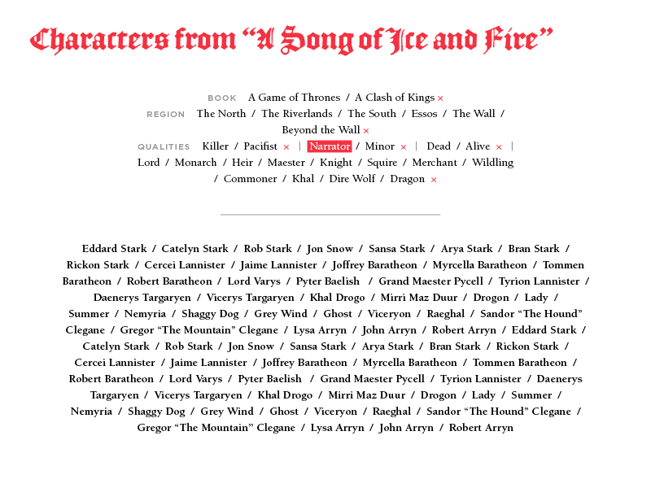
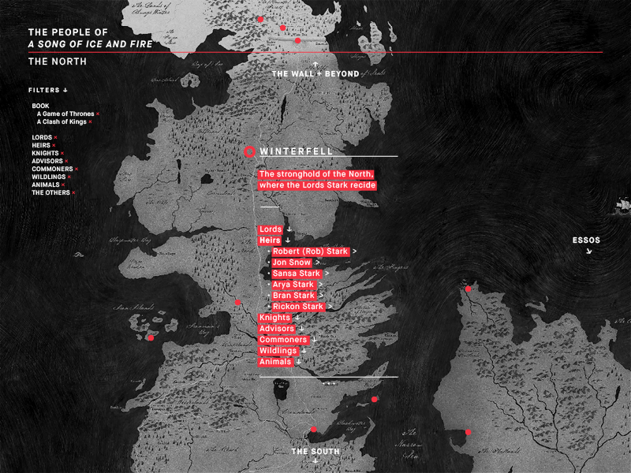
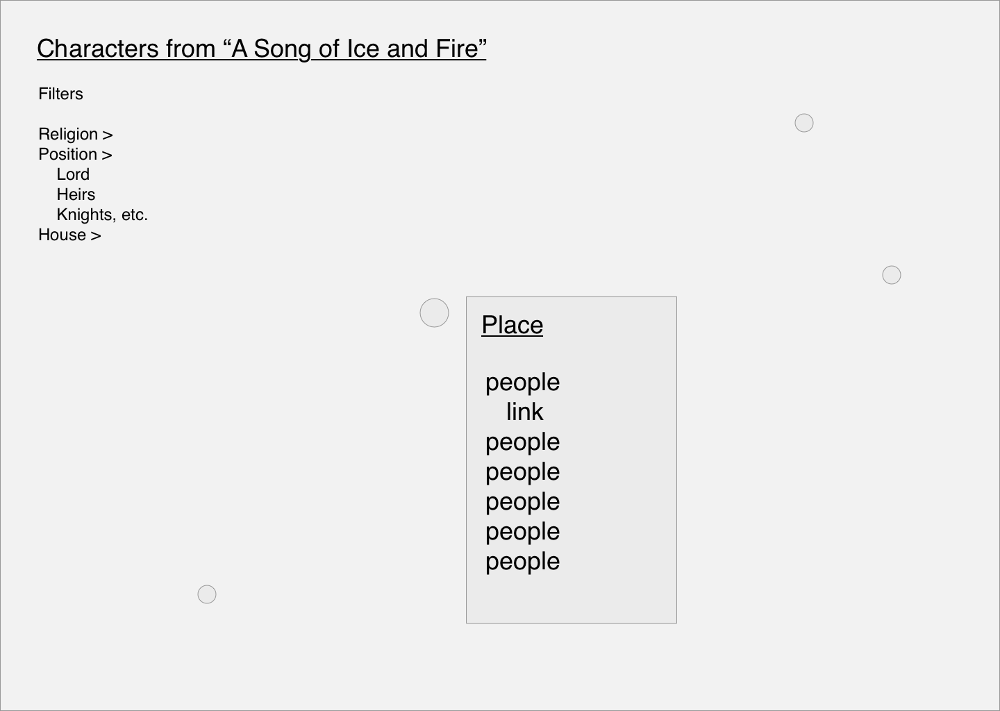
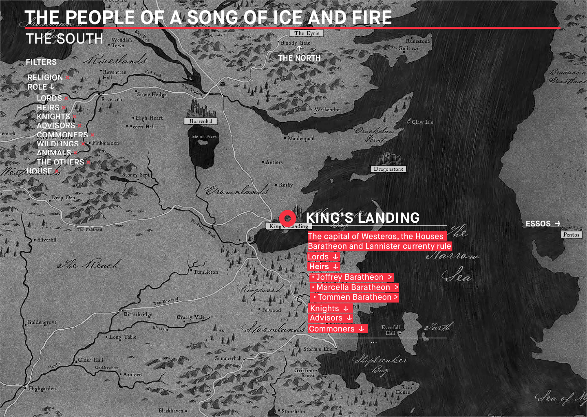

Below are attached images of my original mockup for filtering four schema, which were rendered in InDesign.

Here, I used a basic layout for filtering people based on their religion, geographic location, house affiliation, and role. Below the filters is the bulk of data with every person in the universe, unfiltered and in clear view.

Here, the bulk of the data isn't seeable. I have the original four schema but the geographic filter is utilised as a map. I decided then to move on with this last mockup since it has more depth and more opportunities for the user to manipulate the various filters.
Below is the wireframe with basic text boxes and shapes.

Below is the final Sketch with proper typefaces, highlighted sections for legibility, and other graphic elements (lines,circles, squares, etc.).

Here are the full PDFs for the above images: 1 + 2